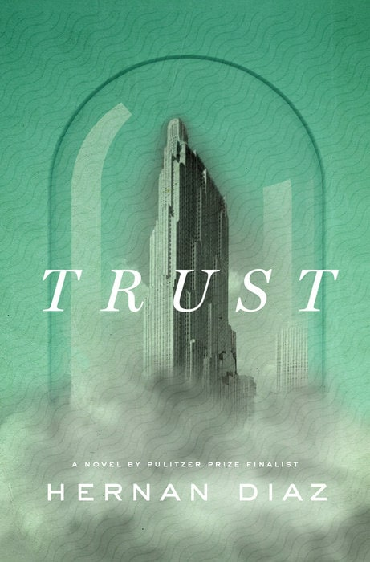

The Petroleum Papers: Inside the Far-Right Conspiracy to Cover Up Climate Change
Auther
Geoff Dembicki
Description
Dembicki, a Canadian investigative reporter, has written a dark tale of money corrupting politics and
paralyzing the
public will. He shows how oil companies were studying climate science as a top priority during the 1970s.
Executives
were briefed and advised to act quickly to solve the problem. Instead, the fossil fuel industry acted to
deceive the
public, fighting a long war against the science of global warming — a science, ironically, that it had been
instrumental
in creating. For those who want a no-frills account of how we ended up on the climate precipice, this is an
essential
read
Stay true
Name
Stay True
Auther
By Hua Hsu
Description
In this thoughtful, affecting book, Hsu questions the possibility of meaning in tragedy. In college, Hsu
became unlikely
friends with Ken, whose mainstream tastes and interests couldn’t have been more different from his. Ken was
murdered
early one morning in 1998 by robbers who were strangers. Hsu describes the aftermath with devastating
emotional
precision. But while tragic, “Stay True” also succeeds as a wry chronicle of the insecurities of youth and of
college
life and culture during the 1990s. With warmth and humor, Hsu has produced an extraordinary, devotional act of
friendship.
Trust

Name
Trust
Auther
By Hua Hsu
Description
Trust” is about an early-20th-century investor. Or at least it seems to be. Framed as a novel, it is
actually an
intricately constructed quartet of stories. The first luxuriates in the tragic fate of America’s wealthiest
man,
Benjamin Rask. In the second, Rask tells his own story. In the third and fourth, the testimonials of those who
knew him
reveal more of the truth. Diaz is interested in the way wealthy men burnish their image and how that process
involves
the diminishment of others. In summary “Trust” might sound overcomplicated, but in execution it’s an elegant,
irresistible puzzle
.webp)